8/18 팀미팅 덱(v17, 본론 30 장)에 실린 데까지가 기준선이다. 덱은 질문 하나를 끝까지 판다 — «각도를 바꾸면 시뮬레이터가 도는 프로펠러를 그리는가». 그 판은 기체 한 대 · 거리 15 m 한 자리 · 잡음 없음 · 재질은 Sionna 기본값에서 멈춰 있다. 그 뒤로 실험 29 건이 그 네 칸을 하나씩 열었다. 이 쪽은 «무엇을 물었고 · 답이 무엇이고 · 어느 그림을 열면 보이나» 만 적은 색인이다 — 과학 서술은 하지 않는다.
⭐가장 짧은 요약은 이렇다. 덱이 30 장에 남긴 숙제 셋이 이제 전부 답을 받았다. ②실제 비행 로그 + 수신 잡음 → 잡음을 실제로 넣은 거리 프레임과 기동 창 격차 분해가 답했고, ③셸 두께 감도 → 진짜 껍데기 두께 실측 정정이 답했다(덱의 결론은 하나도 안 뒤집혔다). ①반사 깊이 축도 08-16 에 읽혔다 — 짝 22 개 전수 조사로 «우리 규약(깊이 1)에 대해서는 닫히고, 축 전체로는 아직 안 닫힌다» 가 나왔다. 남아 있는 것은 그 축의 회절 켠 조합 한 갈래뿐이다 — 아래 §4-1 에 그대로 적어 둔다.
⚠세는 법 두 가지를 미리 밝힌다. ⑴ 덱 30 장은 이 숙제를 «갈래 둘 + 발표 뒤 바로 돌릴 검산 하나» 로 적었다 — 여기서는 셋으로 센다. ⑵ ②는 반쪽씩 답했다: 잡음은 호버 자세에 넣었고(거리 프레임), 비행 로그는 잡음 없이 돌렸다(기동 창). 비행 로그와 잡음을 한 판에 같이 넣은 실험은 아직 없다.
전문 /workspace/teammeeting_0818/_dump_v17.txt
· ⭐덱은 표적 축 한 기체 · 한 거리 · 잡음 없음에서 멈춰 있다 — 아래 표가 그 뒤에 채워진 것들이다.
표를 읽기 전에 이것만 알면 된다. 한 줄씩이다.
| 리듬 몫 [%] | 날개끝 상한 위 에너지 중 «박자의 정수배» 자리에 붙은 비율. 높을수록 도는 날개가 또렷하다. ⛔0 % 는 «무늬가 없다» 가 아니라 «이 잣대로는 못 읽는다» 이다. |
| 빗살 대비 [dB] | 리듬 몫의 짝. 상한 아래에서 «박자 정수배 자리» 가 «그 사이 자리» 보다 몇 dB 높은가. 아무 무늬도 없으면 0 dB 다. |
| 널(백색 값) | 무늬가 전혀 없을 때 그 잣대가 저절로 내는 값. 기체마다 다르다 — matrice4e 12.6 · s1000plus 10.8 · mini5pro 8.7 %. ⚠기체가 다르면 리듬 몫을 직접 대면 안 된다. |
| 요동(AC) · 가만히 있는 성분(DC) | 시간에 따라 변하는 몫과 안 변하는 몫. 이 쪽의 모든 잣대는 DC 를 빼고 잰다 — 안 빼면 동체가 날개를 가린다. |
| 격자 흔들림 밴드 | 계산 격자를 더 촘촘히 하면 수가 저절로 움직이는 폭. 두 팔의 차이가 이 폭 안이면 «다르다» 고 못 말한다 — 판정 불가. |
| 튀는 자세(이상값) = 원장의 «튐» | 한 칸은 자세 8,192 개의 평균이다. 그 중 딱 한 자세만 값이 유별나게 커서(이웃의 스무 배쯤) 칸 전체의 수를 혼자 끌고 가는 경우가 있다. 2026-08-16 에 판정 하나가 실제로 그렇게 뒤집혔다 — 그 한 자세를 빼니 두 판이 일치했다. 그래서 칸마다 «유별나게 튀는 자세가 있나» 를 항상 함께 잰다. |
| PathSolver | Sionna(전파 시뮬레이터)의 경로 추적기. 이 쪽의 «물리 끔 / 물리 켬» 은 그 물리 스위치를 어떻게 조합했느냐를 가리킨다. |
| SBR + PO | «우리 커널» 이 쓰는 두 계산법 — 광선을 쏘아 가림을 재고(SBR), 표면 위에서 되돌아오는 파를 적분한다(PO). |
| PTD(모서리 보정) | 날카로운 모서리에서 생기는 몫을 따로 얹는 보정항. |
| Pd(탐지확률) | 같은 신호에 잡음을 여러 번 다시 태웠을 때 «있다» 로 판정되는 비율. 1.00 이면 매번 잡고 0.00 이면 한 번도 못 잡는다. |
| σ(시그마) | 표적이 되돌리는 반사 세기(레이더 단면적). 절대값은 문헌 값에 맞춰 눈금만 옮긴 것이라 검증된 값이 아니다. |
| PX4 · EIRP · NF | PX4 = 드론 비행 제어 소프트웨어(«PX4 비행 로그» 는 실제 비행에서 받아 적은 기록) · EIRP = 송신 실효출력 · NF = 수신기 잡음지수. 뒤 둘은 가정한 선언값이다. |
묶음 여섯이다. 판정 칸의 수는 전부 아래 «근거 원장» 에서 그대로 옮긴 것이고, 볼 곳 은 이 폴더 기준 상대경로라 눌러서 바로 열린다. ⚠«그림 없음» 이라고 적힌 줄은 판정이 원장(JSON)이나 문서 표에만 있다는 뜻이다 — 숨기지 않고 적는다.
| 무엇을 물었나 | 판정 — 수치 | 근거 원장 | 볼 곳 |
|---|---|---|---|
| 셸 두께 실측 정정기본 10 cm 판 대신 진짜 껍데기 두께(0.5 / 0.75 / 1.5 mm)로 돌리면 무늬가 달라지나 | 안 달라진다. 앙각 −30° 에서 두께는 가만히 있는 성분(DC)만 낮춘다 — 0.75 mm 에서 DC −6.24 dB 인데 움직이는 부분 +0.00 dB · 바닥 −0.00 dB · 빗살 대비 52.0 dB 그대로(파형 상관 1.0000). 세 두께가 소수점까지 같은 리듬 80.5 % 를 낸다. | outputs/material_verdict_0816.json결정서 docs/MATERIAL_CORRECTION.md | 01base · shell 0.75 mm 팔01base · shell 0.5 mm01base · shell 1.5 mm |
| 프로펠러 두께 0.9 mm — 진짜 손잡이재질 정정의 손잡이는 껍데기인가 프로펠러인가 | 프로펠러다. 0.9 mm 로 고치면 −30° 에서 움직이는 부분 −16.99 dB · 바닥 −12.56 dB · 빗살 대비 −6.98 dB(52.0 → 45.0)로 격자 흔들림 밴드 밖이고, 45° 슬래브 예측과 0.34 dB 차로 맞는다. 반대로 정면(0°)에서는 0.000 dB 꿈쩍도 안 한다 ⇒ 정면을 채우는 것은 플라스틱이 아니라 금속 상자라는 덱의 해석이 손잡이 실험으로 닫혔다. | outputs/material_verdict_0816.jsonel_minus30.shell0.75_prop0.9mm · el_0_wiring_control | 01base · shell+prop 팔 |
| 덱 헤드라인 전수 재채점두께를 고치면 8/18 덱에서 말한 것 중 무엇이 무너지나 | 무너지는 것 없음. 오히려 덱이 «추정» 으로 말한 두 문장이 실측으로 확증됐다 — 「10 cm 판이라 밝게 깔려 있다」는 방향이 바닥 실측 −12.56 dB 로 확증됐고, 「정면을 덮는 것은 금속」도 확증. ⚠수를 직접 대지는 말 것 — 덱이 적은 −4.9 / −5.8 dB 는 두께 2 mm 의 정반사 값이고 −12.56 dB 는 두께 0.9 mm 프롭의 확산 바닥이라, 같은 방향을 가리킬 뿐 같은 양이 아니다. 「굴절만 거리 생존」·「회절의 덮음」은 유지되고, 덱 26 장의 «78 dB 익사 간격» 은 오히려 벌어진다(프롭이 −17 dB 더 어두워지므로). | outputs/material_verdict_0816.jsonheadline_impacts_ko 8 항목 · slab_predictions_3p5ghz | 그림 없음 — 원장 표 |
| 무엇을 물었나 | 판정 — 수치 | 근거 원장 | 볼 곳 |
|---|---|---|---|
| 표준 프레임 재고 조사여섯 팔 × 다섯 축으로 채우기로 한 칸이 다 찼나 | 76 칸 중 76 칸 채움 · 실패 0. 12 갈래가 새로 열렸다(PTD 팔 개통 · 굴절만의 앙각/기체/방위/거리/부품 · 우리 방위 4 점 · 거리 240/480 m · 격자 전앙각화 · 깊이 3 잔여). 못 채우는 것은 격자 축의 PathSolver 두 팔 × 두 앙각뿐이고 이유도 구조적이다 — 격자는 우리 커널 전용 축이라 PathSolver 에 대응물이 아예 없다. 진짜 구멍은 −75° 10 m 레거시 1 칸뿐이다. | outputs/frame_inventory_0816.json규약 docs/STANDARD_FRAME.md | 아틀라스 대문 — 팔 115 · 칸 337 · 그림 258 |
| 우리 커널 + PTD(모서리 보정) 팔 개통모서리 보정을 켜면 무늬가 바뀌나 — 기체·방위·거리·격자 어디서든 | 안 바뀐다. 확장한 7 칸(기체 2 · 방위 1 · 거리 3 · 격자 1) 전부 요동 레벨 차 ≤0.02 dB · 리듬 차 ≤0.1 %p · 빗살 차 ≤0.1 dB · 파형 상관 ≥0.9999. 모서리 항이 만드는 몫은 ≤0.026 % 로 기본판 최대(0.478 %)보다도 작다. 자세당 1.3 초로 순정의 10 배가 드는데 잣대는 안 움직인다. | outputs/frame_completion_0816.json q3_ptd_diff앞선 판정 outputs/ptd_level_probe.json | 07ptd — 그림 10 장07ptd · 격자 칸 |
| 굴절만 팔의 기체 확장공장 기본값에 확산만 켠 판이 다른 기체에서도 무늬를 지키나 | 빗각 생존은 기체 불문이다 — mini5pro −30° 리듬 71.0 %, s1000plus −60° 65.7 %, matrice4e −15~−90° 57~65 %. 단 정면 익사는 기체 불문이 아니다 — s1000plus 만 0° 에서 리듬 30.3 % · 빗살 22.0 dB 로 자기 널(10.9 %) 위에 남는다(matrice4e 13.3 % · mini5pro 8.7 % 는 널 그대로). | outputs/frame_completion_0816.jsonq1_onlyrefr_airframe · verdicts_ko.q1 | 02switch · onlyrefr mini5pro02switch · onlyrefr s1000plus03airframe |
| 굴절만 팔의 거리 사다리공장 기본값 판이 멀어져도 무늬를 지키나 (30 · 60 · 120 · 240 m) | 지킨다. 앙각 −30° 에서 30/60/120/240 m 리듬 63.6 / 69.7 / 66.2 / 68.8 %, 빗살 대비 33.0 → 28.2 dB 로 완만하게만 준다. 정면(0°)은 30 · 60 m 에서 익사한다(리듬 12.6 % ≈ 널 12.5, 빗살 0.0 / −0.1 dB) — ⭐덱이 15 m 한 자리에서 본 정면 붕괴가 더 먼 거리에서도 되풀이된다. ⚠정직하게 — 120 · 240 m 정면 칸은 익사 판정에 안 넣는다. 그 두 칸의 원장 값(리듬 43.9 / 56.1 %, 빗살 28.5 / 24.4 dB)은 요동이 반올림 바닥 근처(near_numeric_floor)에서 나온 수라 물리로 읽을 자격이 없다. | outputs/frame_completion_0816.jsonmatrix.ps_onlyrefr.axes.range | 06range02switch · onlyrefr r3002switch · onlyrefr r240 |
| 우리 커널 거리 240 · 480 m파면이 굽은 15 m 와 평면에 가까운 480 m 가 무늬를 다르게 만드나 | 안 만든다. 15 / 30 / 60 / 120 / 240 / 480 m 에서 −30° 리듬 82.9~83.3 %, 빗살 42.9~43.7 dB 로 사실상 한 값이다. 레벨이 안 변하는 것은 설계상 당연하고(1/R⁴ 은 링크버짓 몫), 실질 내용은 파면 곡률이 무늬를 안 비튼다는 것이다. | outputs/frame_completion_0816.jsonmatrix.ours.axes.range — 13 칸 | 06range · ours 480 m06range · ours 240 m09planewave |
| PathSolver 다끔 480 m인용 보류였던 480 m 칸을 다시 돌리면 쓸 수 있게 되나 | 부분 해소 — 원인은 밝혀졌지만 480 m 두 칸은 여전히 인용 못 한다. 정면은 8192 자세 전부 경로가 있는데 요동이 배정밀도 반올림 바닥(1e-12) 아래로 꺼졌고, −30° 는 8192 자세 중 5287 개(64.5 %)가 경로 0 개다(광선 40 억 발로도 안 잡히는 표집 희소성). 다시 돌린다고 메꿔질 성질이 아니다. ⇒ 인용 가능 범위를 15~240 m 로 확정(−30° 리듬 78.7~84.1 % · 빗살 40.5~52.0 dB). | outputs/frame_completion_0816.jsonq2_alloff_480m.ladder · verdict_ko | 06range · PS 480 m⚠아틀라스에선 빈칸으로 보인다 — 왜 빈칸인지는 §4 에 적었다 |
| 우리 커널 방위 곡선 — 점 하나에서 9 점으로드론을 돌리면 무늬가 어떻게 변하나 | −30° 에서 방위 0 / 15 / 22.5 / 30 / 45 / 60 / 67.5 / 75 / 90° 가 리듬 83.3~89.7 %, 빗살 39.9~45.0 dB. 덱은 방위 45° 한 점만 갖고 있었는데 이제 곡선이라 «단조인지 주기적인지» 를 물을 수 있다. ⚠우리 팔의 방위 의존은 여전히 격자 흔들림 밴드 안이라 «둔감하다» 가 아니라 «이 격자로는 못 잰다» 가 정확하다. | outputs/frame_completion_0816.jsonmatrix.ours.axes.azimuth — 15 칸 | 04azimuth — 그림 31 장04azimuth · az1504azimuth · az90 |
| mini5pro 물리 켬회절의 «덮음» 이 기체에 상관없이 일어나나 | 상관없다. mini5pro 물리 켬은 −30° 에서 리듬 11.3 %(자기 널 8.7) · 빗살 5.8 dB 로 잡음 수준이다. matrice4e(12.5 % · 6.3 dB) · s1000plus(11.2 % · 4.6 dB)와 같은 자리다 ⇒ 세 기체 물리켬 비교가 완성됐고 덱 27 장의 «회절은 덮는다» 가 세 기체 전부에서 선다. | outputs/md_atlas_index.json03airframe · phys_mini5pro 팔 | 03airframe · mini5pro 물리켬 |
| 별칭 두 팔의 독립 재실행 공짜 앵커같은 물리를 두 번 돌리면 얼마나 다르게 나오나 | 잣대는 표시 자리까지 같다. 굴절만 팔과 옛 스위치 태그 팔 6 쌍이 비트동일은 아닌데(광선 표집이 비결정적) 요동 레벨 차 0.0 dB · 리듬 차 0.0 %p · 상관 1.0000 이다. 격자 산포 밴드보다 자릿수로 작아서, 팔 사이 차이를 읽을 때 «같은 것을 두 번 재면 이만큼» 의 기준이 된다. | outputs/frame_completion_0816.jsonalias_rerun_note_ko · alias_bit_identity_checks | 그림 없음 — 원장 한 줄 |
| 무엇을 물었나 | 판정 — 수치 | 근거 원장 | 볼 곳 |
|---|---|---|---|
| 잡음을 실제로 넣은 거리 프레임 사용자 질문 직답수신 잡음을 넣으면 거리별로 어느 엔진이 무엇까지 읽히나 | 물리 켬은 60 m 부터 아무것도 못 읽는다. −30° 빗살 대비 [15/30/60/120 m] — 우리 커널 43/43/39/29 dB 전부 읽힘, 물리 끔 52/42/21/4 dB(120 m 판정 불가), 물리 켬 6/3/−0/0 dB 로 60 m 부터 Pd 0.00. 연장선으로 잰 «무늬 읽히는 한계» 는 우리 554 m · 우리+PTD 656 m · 물리끔 641 m · 굴절만 556 m · 물리켬 47 m. ⚠함정 각주 — 물리켬을 죽이는 것의 큰 몫은 «동체 받침대» 다. 움직이는 성분에 앵커를 걸면 31.1 dB 를 돌려받는다. | outputs/noise_distance_frame.jsonheadline_ko 12 줄 · read_lines · sensitivity | 그림 · noise_distance_frame.png |
| 맵 눈금 규약 — 무엇을 0 dB 로 잡나패널마다 자기 최댓값으로 밝기를 맞추면 무엇을 잃나 | 세기 차이를 통째로 잃는다. 눈금을 셋으로 갈랐다 — 패널별 최댓값 / 공통 기준 / 잡음 바닥 기준 — 그리고 외우기 쉬운 규칙 하나를 규약으로 못 박았다 — «판이 둘 이상이면 패널별 최댓값 눈금을 쓰지 마라»(잡음을 넣었거나 탐지·분류를 말하는 그림은 잡음 바닥 기준). «있다/없다» 막대는 판정하는 그 양의 잡음 분포에서 세우고, 판정 어휘도 통일했다(Pd ≥ 0.9 탐지 · 0.1~0.9 애매 · ≤ 0.1 미탐지). ⇒ 덱 12 장의 ⚠«밝기가 아니라 무늬 모양을 봐야 한다» 단서를 이걸로 대체할 수 있다. | outputs/scaled_maps.json규약 정본 docs/MAP_SCALING.md | 같은 자료 · 눈금 셋엔진 × 잡음거리 × 잡음앵커 감도외 2 장 — outputs/figures/scaled_maps/ |
| 격자 산포 밴드를 전 앙각으로 확장덱이 쓰는 밴드(리듬 21.8 %p · 요동 3.86 dB)가 좁아지나 넓어지나 | 잣대마다 갈린다 — 한 마디 답이 없다. ①빗각(−15~−75°) 요동 산포는 좁아졌다(최대 1.31 dB, 새로 닫은 −60/−75° 는 0.02~0.10 dB) ⇒ 3.86 dB 는 정면 값이었고 빗각에 그대로 대면 과잉 보수다. ②전체 폭은 직하방이 5.62 dB 로 넓혔다. ③리듬 밴드 21.8 %p 는 유지. ④⭐빗살 대비가 격자의 새 민감 잣대 — 한 계단마다 +4.0~4.6 dB 단조 상승이라 팔 사이 빗살 비교에 ≈5 dB 단서를 새로 달아야 한다(우리 ↔ PathSolver 의 30~50 dB 격차 판정은 안 흔들린다). | outputs/frame_completion_0816.json q4_grid_band기준 outputs/grid_convergence_check.json | 08grid08grid · div24 전앙각08grid · div48 |
| 반송파 이전 표 3.5 → 5.8 GHz3.5 GHz 에서 잰 판정을 5.8 GHz 에 어디까지 그대로 인용해도 되나 | 닫히는 것은 시간·주파수 축의 눈금(날개끝 상한 · 대역 · 표본율 · 속도축 · 원거리장 경계)이고, 안 닫히는 것은 세기와 무늬(σ 절대레벨 · 로브 위치 · 가림이 만드는 복소합 · PO 문턱)다. ⚠경고 하나 — 기체 3D 대각(0.776 m)을 D 로 잡으면 5.8 GHz 의 원거리장 경계가 23.32 m 라 지금 쓰는 15 m 가 근거리장으로 넘어간다(수평 폭 기준이면 13.68 m 로 아슬하게 밖). 5.8 GHz 판에는 근거리장 단서를 다시 붙이고 어느 D 인지 명시해야 한다. | outputs/carrier_transition_table.json_meta.headline_ko · caveat_farfield_ko · rows | 그림 없음 — 원장 표 |
| 격자 위상 널 배관 도구격자를 촘촘히 했을 때 변한 몫이 «수렴» 인가 «표본 자리를 다시 굴린 것» 인가 — 가를 도구가 되나 | 도구는 섰다 — 게이트 17/17 통과(인자를 안 주면 비트동일, 주면 표본 자리만 옮긴다). 송신점이 같이 움직이는 몫이 표본 이동 위상보다 훨씬 작아 «자리만 바꾼 판» 이라 말할 수 있다. ⚠다만 그 팔을 실제로 돌린 것은 아직 아니라, 위 ③ 의 귀속은 여전히 열려 있다. | outputs/verify_grid_shift.json읽는 법 docs/GRID_PHASE_NULL.md | 그림 없음 — 배관만 |
| 아틀라스 — 337 칸을 그림으로337 개 칸을 그림으로 한 번에 훑을 수 있게 만들 수 있나 | 만들었다 — 주제 9 개 · 팔 115 개 · 칸 337 개 · 그림 258 장. 핵심은 두 가지를 그림·표에 못 박은 것이다 — ①수를 낼 자격이 없는 칸은 값을 안 낸다(에코 0 · 자세 덜 참 · 요동이 반올림 바닥 아래), ②백색 널은 기체마다 다르다(matrice4e 12.6 · s1000plus 10.8 · mini5pro 8.7 %). | outputs/md_atlas_index.json재검증 outputs/atlas_falsify.json | ◇ 아틀라스 대문 — 여기서 시작README.md노트북 reports/A_atlas.ipynb |
| 무엇을 물었나 | 판정 — 수치 | 근거 원장 | 볼 곳 |
|---|---|---|---|
| ① 기체 분류 첫 실험박자 빗살만 보고 기체 3 종(mini5pro · matrice4e · s1000plus)을 맞힐 수 있나 | 맞힌다. 우리 커널 100 %(112/112 ×3), PathSolver 팔 94.64 %. 섞기 널은 씨앗 5 종에서 0.321~0.345 로 우연(1/3) 수준이라 성적이 우연이 아니다. PathSolver 가 틀리는 자리는 정면(72.9 %)과 직하방(89.6 %) 둘뿐 — 덱이 «의아한 양 끝» 이라 부른 바로 그 두 각도다. ⚠제원에서 계산한 템플릿에 맞추는 규칙 분류기이고 잡음이 없으므로 성능으로 인용 금지. | outputs/classify_airframe.json반증 outputs/refute_classify_airframe.json | 그림 · classify_confusion.png |
| ② 거리별 탐지확률 곡선잡음을 교정해서 넣으면 몇 미터에서 반반이 되나 | 우리 커널 −30° 에서 R50 = 724 m(빗살 잣대) / 567 m(대역 잣대). 실측 오경보율 1.1e-3(목표 1e-3)이고 자체검사 7/7 통과 — 문턱 교정 루틴은 신호를 인자로 받지도 않는다(누수 없음). ⚠σ 를 문헌 앵커로 재보정한 위의 값이고 재보정은 검증이 아니다. EIRP 30 dBm · NF 5 dB 는 선언값이다. | outputs/detection_curves.json적대 재현 outputs/detection_curves_attack_*.json | 그림 · detection_pd_curves.png |
| ③ 기동 창 격차 분해같은 PX4 비행 창에서 우리 커널과 선배 파이프라인의 20 dB 격차는 무엇 때문인가 | 엔진 차이가 아니라 잣대 차이가 가장 크다. 겉보기 20.7 dB 의 최대 항은 바닥 재는 법의 차이 9.0 dB 이고, 같은 법으로 다시 재면 엔진 차이는 11.6 dB 로 준다. 선배 파이프라인 안에서만 가림을 켜고 끄는 것이 31.2 dB 를 움직이고(우리 SBR 은 가림이 내장이라 이건 규약이 아니라 물리다), 블레이드 재질은 1.6 dB 뿐이다. ⚠선배 팔의 350 Hz 선은 박자 정수배가 아니라 로그 표본율 50 Hz 의 정확히 7 배 — 데이터·조립 단계 인공물 후보다. | outputs/bridge_cross_precise.jsongap_decomposition · artifact_350hz · selftest_ok | 그림 · bridge_cross_maps.png그림 · bridge_cross_lines.png |
| ④ 물리 스위치 → 분류 성적 번역엔진 물리를 켜면 기체 분류 성적을 얼마나 잃고, 왜 잃나 | 24.1 %p 를 잃는다(같은 2 클래스 판에서 굴절만 96.0 % → 물리 켬 71.9 %, 짝 신뢰구간 −46.0~−5.4 %p 로 0 을 안 걸침). 범인은 쐐기 회절 이다 — 빗각에서 바닥을 +28~52 dB 올린다(중앙값 +36.1). 모서리 회절 팔은 기준과 바닥 차이가 0.0 dB 로 아무것도 안 바꾼다. ⭐그리고 성적이 떨어진 것은 «날개 신호가 사라져서» 가 아니라 «바닥이 올라와 덮여서» 다 — 빗살을 한 번도 안 건드리고 바닥만 물리켬 높이로 올린 가짜 팔이 물리켬 성적을 1.8 %p 안에서 재현한다. 덱 27 장의 «덮는다» 가 성적이라는 다른 언어로 재확인됐다. ⚠물리 켬 성적은 클래스가 갈린다(matrice4e 96.4 % ↔ s1000plus 47.3 %). | outputs/switch_to_classification.jsonverdict · burial_vs_erasure · single_axis | 그림 · switch_classification.png |
| 로터 흔들림 프리셋 사다리 딥러닝 착수 게이트로터가 얼마나 흔들리게 설정하느냐가 분류 성적을 좌우하나 | 좌우한다. 프리셋 6 종의 성적 폭이 6.14 %p 인데 씨앗만 바꿔서 생기는 폭은 0.84 %p (7.33 배 · p = 0.0015). 그래서 딥러닝에 들어가기 전에 프리셋을 하나로 못 박고 원장을 다시 구워야 한다. ⛔점수 높은 프리셋을 고르면 안 된다 — 위쪽 두 판이 잘 나오는 것은 물리가 아니라 초기위상이 정렬돼 데이터가 인위적으로 깨끗해서다. 사다리는 흔들림에 단조롭지 않다(적당히 흩어지면 올라갔다가, 너무 흩어지면 박자 추정이 번져 내려온다). | outputs/rotor_preset_ladder.jsonverdict · mechanism · robustness | 그림 · rotor_preset_ladder.png |
| 무엇을 물었나 | 판정 — 수치 | 근거 원장 | 볼 곳 |
|---|---|---|---|
| 로터 요동 공개데이터 조사우리가 쓰는 야외 프리셋 값이 실제 비행 로그의 어디쯤인가 | 정확히 «가벼운 바람 야외 호버» 자리 — 유지 타당. 원시 로그를 직접 내려받아 통계까지 냈다(DREGON · PX4 Flight Review · NeuroBEM). 공개 눈금은 무풍 벤치 0.1~1.4 % → DJI 무풍 호버 0.5~0.6 % → 야외 위치유지 1.4~2.6 % → 과격·강풍 5~10 % 이고 우리 outdoor(시간 흔들림 2.45 %)가 그 안이다. 스펙트럼 모양은 4 개 독립 원천이 만장일치로 «저주파 배회»(백색·정현파 기각). ⭐로터 4 개는 같은 회전수가 아니다 — 실기 로그에서 평균 오프셋 0.5~7 %. | 정본 prior_work/rotor_jitter_sources.md통계 outputs/rotor_log_traces.json원시 사본 prior_work/outputs/rotor_jitter_raw/ | 그림 없음 — §4 참조 |
| 진짜 DJI 실비행 요동 앵커DJI 기체의 실제 회전수 요동 수치를 구할 수 있나 | 구했다. Mavic 2 Pro 18 비행을 기내 녹음으로 회전수까지 복원한 논문(Heutschi 2020)의 표 5 를 PDF 축자 추출과 페이지 렌더 판독으로 이중 대조했다(어긋난 항목 0 건). 무풍 호버 요동 0.5~0.6 %, 바람 1 m/s 당 +0.52~1.09 %p 공식까지 나온다. 우리 outdoor 2.45 % 를 이 공식으로 되돌리면 호버 바람 1.46~3.25 m/s 에 해당 ⇒ 덮어쓸 이유 없음. ⇒ 관문의 «DJI 수치 없음» 단서를 시간 흔들림 축에서 지울 수 있다(로터별 산포는 음향 추출이라 여전히 못 준다). | outputs/rotor_heutschi2020_table5.json원문 사본 prior_work/outputs/rotor_jitter_raw/actasynth.pdf | 그림 없음 — §4 참조 |
| 저속 표집 앨리어싱 A/B4 Hz 로 찍은 로그라서 우리 프리셋이 실제보다 작게 잡힌 것 아닌가 | 걱정이 방향부터 틀렸다. 표집을 낮추면(67 → 10 → 4 Hz) 요동 통계가 깎이는 게 아니라 부풀어 오른다(준-호버 구간에서 최대 ×1.77). 즉 4 Hz 로 잰 값은 과소가 아니라 상한측이다. ⇒ 정직한 읽기는 «outdoor 2.45 % 는 1.41~2.45 % 대역의 상한측». ⚠앨리어싱 단서는 «닫힘» 이 아니라 «방향 확정 + 크기 상한 확보» 로 좁혀진 것이고, 강등 왜곡 크기는 기체·전자변속기 구조에 달려 있어 그대로 옮기는 데는 불확실이 남는다. | outputs/rotor_log_traces.jsonaliasing_ab_10hz_20260816 · amendment_20260816 | 그림 없음 — §4 참조 |
| 무엇을 물었나 | 판정 — 수치 | 근거 원장 | 볼 곳 |
|---|---|---|---|
| 분류 딥러닝 선행연구 39 편드론 마이크로도플러 분류를 딥러닝으로 한 선행연구가 무엇을 어디까지 했나 | 45 편 수집 → 41 편 판정 → 39 편이 원문 검증 통과(분류 논문 29 · 시뮬 앵커 5 · 서베이 5). 불통과 2 편과 미판정 4 편은 본표 밖에 따로 적었다. 우리 첫 분류 실험과의 거리, 빌려올 방법론, 패시브 조명원 분류의 존재 여부까지 다섯 축으로 정리했다. | outputs/md_classification_dl_survey.json정본 prior_work/md_classification_dl_survey.md | 그림 없음 — 문서 표 |
| 딥러닝 설계의 탑티어 뒷받침 31 편우리 딥러닝 파이프라인의 설계 선택마다 상위 학술지 근거를 댈 수 있나 | 31 편 전부 원문 확인, 제거 0 편. 수치를 옮겨 오는 4 건은 PDF 를 내려받아 축자 대조했다. ⚠정직하게 남긴 것 — 우리 선택과 긴장 관계인 3 건(AdamW · Wilson · Raghu)과 설계에 빈칸인 1 건(dropout)은 맞춰 고치지 않고 원장에 그대로 남겼다. 인용 문구를 조심해야 하는 표기 주의 3 건도 따로 적었다. | 정본 prior_work/dl_toptier_anchors.md설계 docs/DL_PIPELINE.md 부록 A-2 · B11 · B12 | 그림 없음 — 문서 표 |
| 딥러닝 최신성 조사 33 편동일 과제가 아니어도 비슷한 과제의 최신 기법 중 우리에게 쓸 것이 있나 | 33 편을 셋으로 갈랐다 — «바로 응용 가능» 11 편, 나머지는 «관문 뒤 후보» 또는 «우리 규모엔 부적합». 유행이라고 억지로 끼워 넣지 않은 것 자체가 성과다. 허위·서지 오류 0 편이고 기존 앵커 31 편과 중복 0 건. ⛔설계 문서는 이 라운드에 한 글자도 안 건드렸다 — 여기까지는 후보 제안이고 반영은 다음 개정 라운드다. | 정본 prior_work/dl_modernity_survey.md | 그림 없음 — 문서 표 |
| 다음 큐 설계서 — 후보 23 개 심사 ⚠ 덱 이전다음에 무엇을 어떤 순서로 돌려야 하나 — 위 29 건의 순서를 정한 문서다 | ⚠이 줄만 덱 이후가 아니다 — 설계서는 08-15 22:30 KST, 덱 v17 은 08-16 11:21 KST 라 여기서 나온 상위 넷(광선 예산 · 격자 · 방위 · 스위치)은 이미 덱 안에 들어가 있다 — 격자 밴드 21.8 %p(덱 2·28 장 각주) · 방위 낙차 −57.1 dB(14·26 장) · 스위치 격자(27·30 장) · 광선 예산(10 장)이 전부 그 넷의 결과다. 그래도 싣는 이유는 위 29 건의 순서가 여기서 나왔기 때문이다. 후보 23 개를 세 렌즈로 심사했더니 상위 16 개 중 15 개가 GPU 0 시간(저장된 원장만 다시 읽으면 되는 것들)이었고, 순서 원칙은 «잣대 층 → 헤드라인 정정 층 → 파생 층 → GPU 지출 층» — 프리셋 사다리와 스위치→분류가 그 다음 칸이다. | docs/NEXT_EXPERIMENTS.md실행 원장 outputs/switch_factorial.json · grid_convergence_check.json · raybudget_ac_ladder.json · r12_azimuth_harvest.json | 그림 · 스위치 완전요인그림 · 격자 밴드그림 · 광선 예산그림 · 방위 게이트 |
위 표에서 «그림 없음» 이라고 적은 줄들의 사정이다. 판정이 있는데 그림이 없는 것과, 판정 자체가 아직 없는 것은 다르다 — 그 둘을 갈라 적는다.
outputs/switch_factorial.json(08-15 15:23 KST 판)의
B_failures 첫 줄은 인용하면 안 된다 — 그 파일은 새 칸이 들어오기 전이다.볼 곳 —
02switch · «반사 깊이 축» 절 ·
원장 outputs/depth_axis_verdict_0816.json ·
재생성 benchmark/build_depth_axis_fig.py
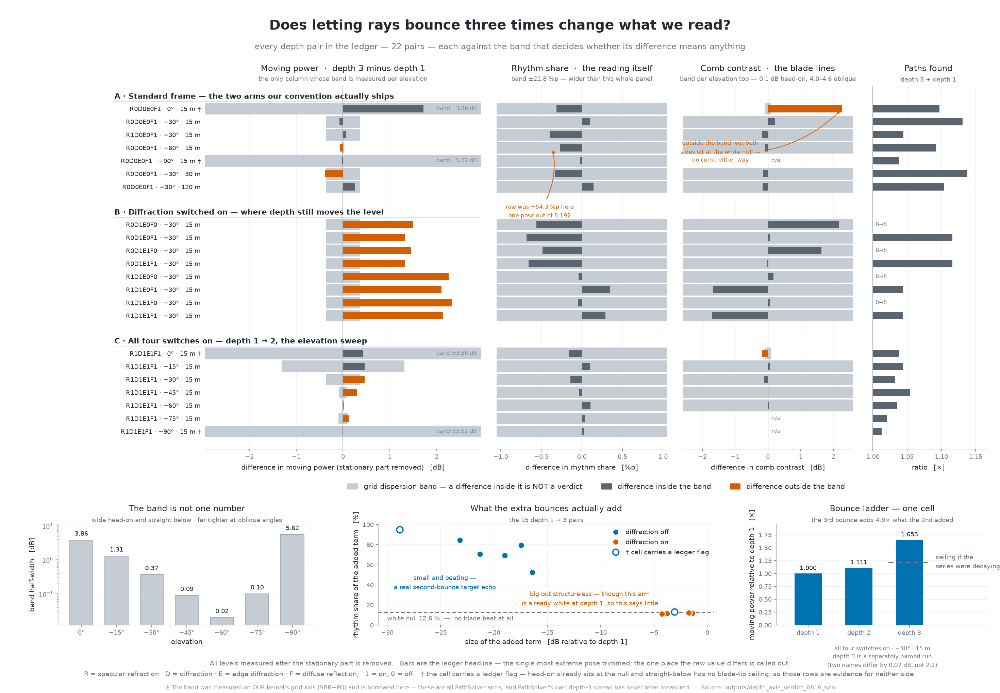
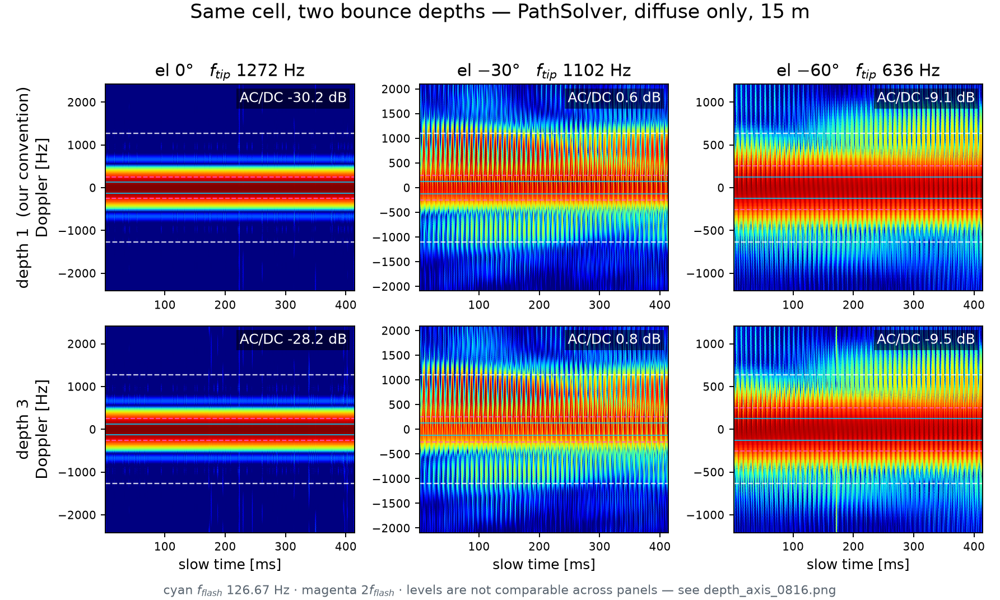
reports/ 에는
옛 이름이 남아 있다.
⇒ 지금 판정의 정본은 리포트가 아니라 docs/RESUME.md §5 «재인용 금지·꼬리표 강제» 표다.
이 색인 페이지가 필요한 이유가 그것이다.
outputs/material_verdict_0816.json)과 아틀라스 그림
(01base 의 shell · prop 팔 8 장)은 있는데
이 판정을 담은 리포트 절이 없고, 덱은 여전히 «Sionna 기본 10 cm 판» 수치로 말한다
(덱 10 장 · 26 장 각주가 이걸 예고만 해 둔 상태다).
outputs/figures/ 에만 있고 어느 리포트 권에도 안 실렸다.
noise_distance_frame.pngscaled_maps/ 6 장classify_confusion.pngdetection_pd_curves.pngbridge_cross_maps.png · bridge_cross_lines.pngswitch_classification.pngrotor_preset_ladder.pngoutputs/figures/report07_f13.png)은 08-11 08:53 KST 판이라
이번 추가분이 안 들어 있다.
⛔원장 자체에 «빌더를 다시 돌리면 DREGON 후보 행이 사라진다» 는 경고가 붙어 있으므로,
그림을 다시 굽기 전에 병합 보존을 먼저 확인해야 한다.
outputs/jihyuck_po/ · bridge_cross_precise.json)에
애초에 없다. 여섯 팔 비교표에서 한 열이 비어 있는 것은 결측이 아니라 설계상 없는 것이다.
docs/RESUME.md 0816 §0 은 굴절만 거리 빗살 대비를 «28.9 → 24.5 dB», 우리 커널 480 m 를
«39.5 dB», mini5pro 물리켬 빗살을 «5.0 dB» 로 적었다. 그 뒤 병합된 원장은 같은 칸들을
«33.0 → 28.2 dB», «43.7 dB», «5.8 dB» 로 낸다.
확인 결과 최신 병합본이 맞다 — frame_completion_0816.json(08-16 17:01 KST)과
아틀라스 원장 md_atlas_index.json(08-16 16:54 KST)이 서로 일치하고,
RESUME 의 수는 그 병합 전에 적힌 값이다.
⇒ 이 색인과 아틀라스는 병합본 수치를 쓴다. RESUME 의 그 세 줄은 다음 갱신 때 맞추면 된다.
/workspace/sionna/atlas(지금 이 폴더)가 원본이고,
/workspace/team_meeting/atlas 는 덱과 함께 들고 다니려고 자체완결로 떠 놓은 사본이다.
08-16 17:31 KST 기준 사본도 새로 떠졌고, 위 표의 새 팔(shell · prop · 방위 9 점 · 240/480 m)이
양쪽에 다 들어 있다(양쪽 대문이 똑같이 주제 9 · 팔 115 · 칸 337 · 그림 258 을 센다).
⇒ ⚠사본은 뜬 시각에 묶인다 — 원본이 다시 구워지면 사본은 그 순간부터 뒤처진다.
사본을 볼 때는 파일 시각을 먼저 보고, 다르면 이 폴더가 정본이다.
§4-4 에서 «그림은 있는데 리포트가 없다» 고 적은 것들이다. 누르면 원본이 열린다. 리포트 절이 생기기 전까지 이 판이 유일한 입구라 여기 모아 둔다.
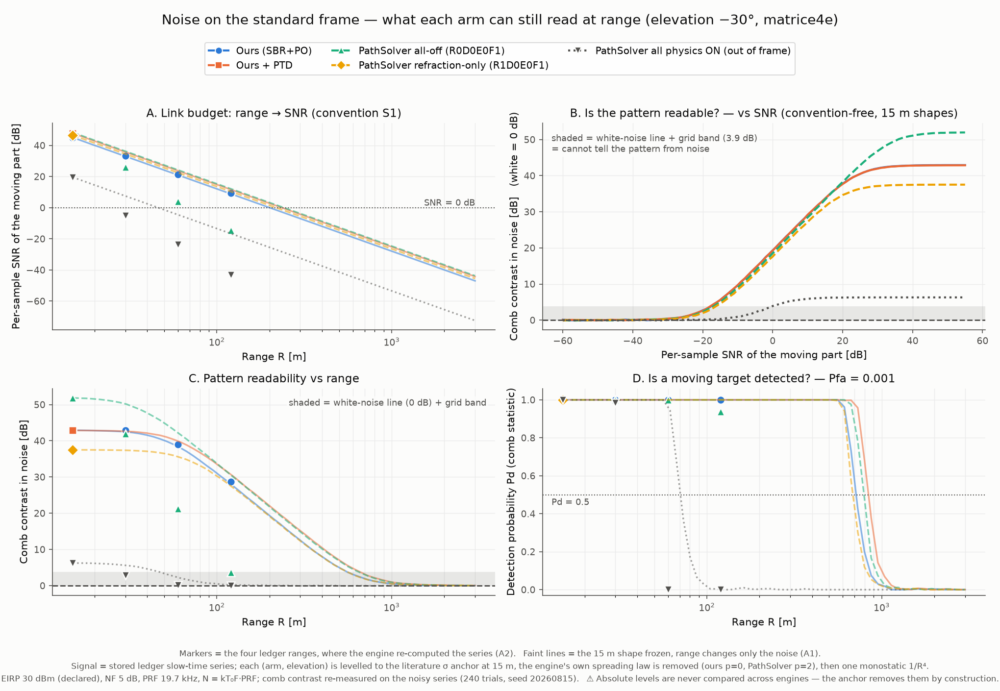
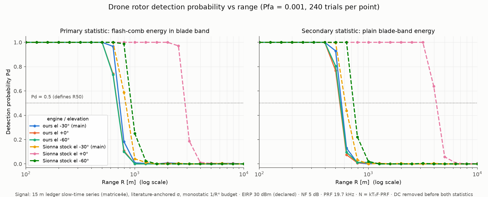
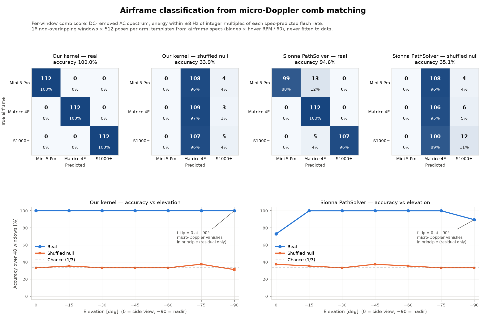
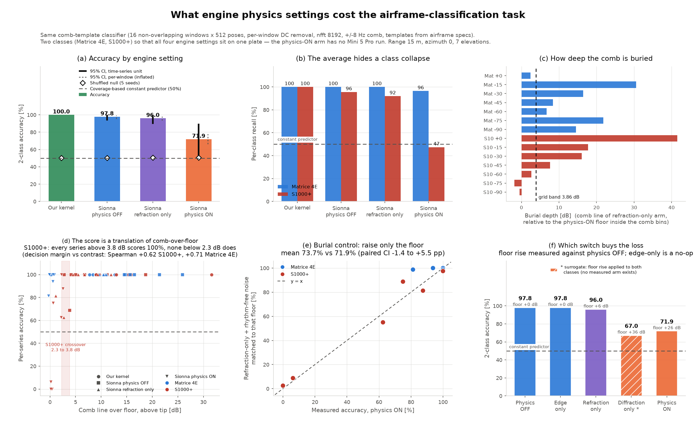
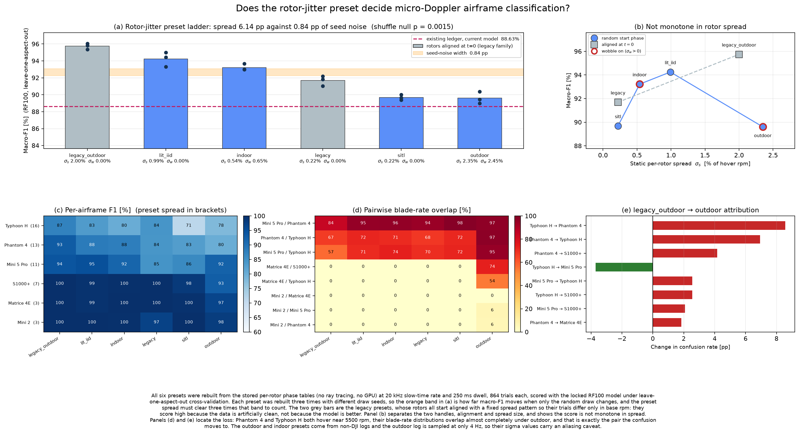
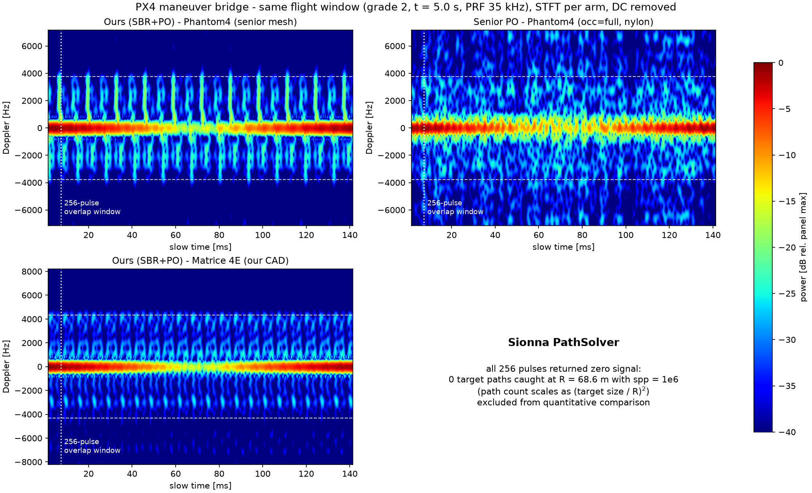
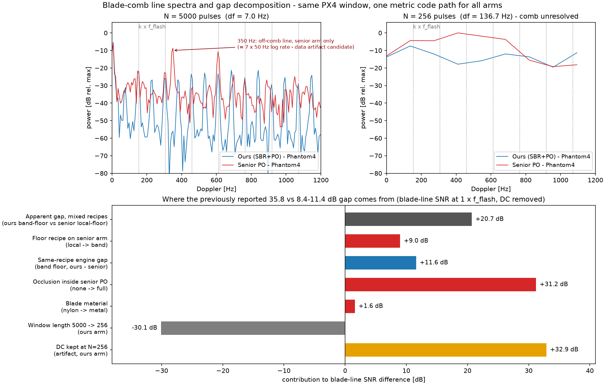
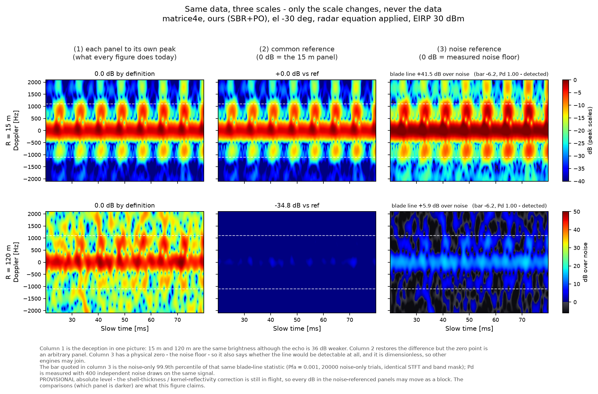
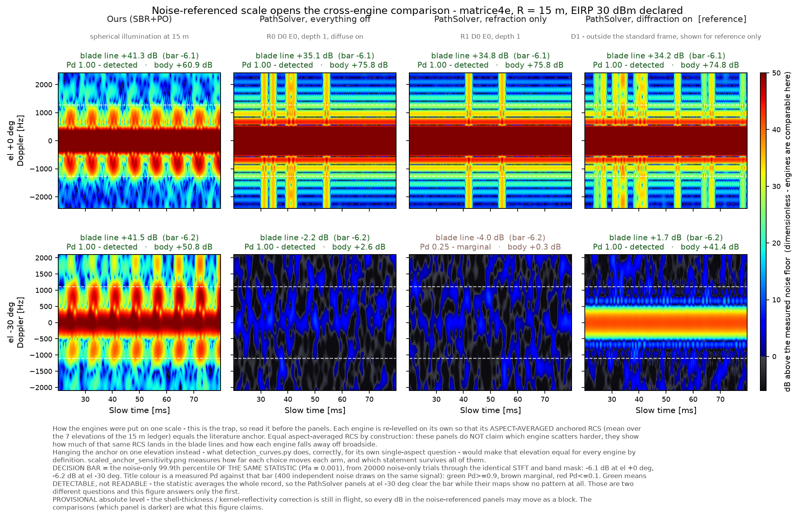
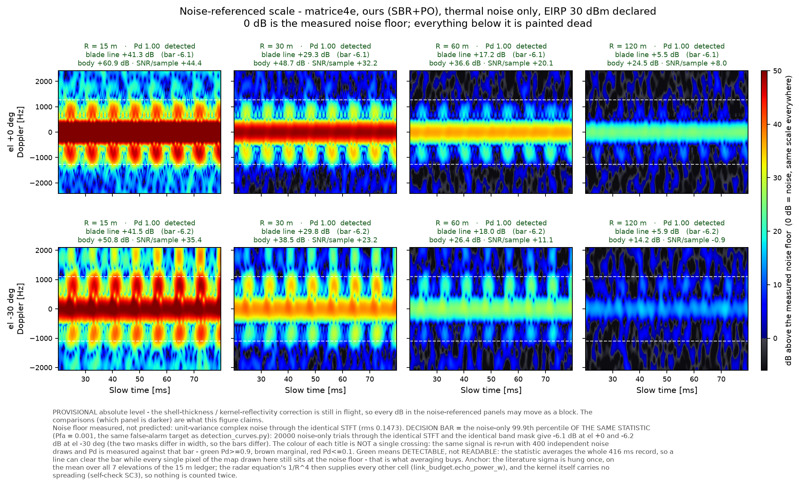
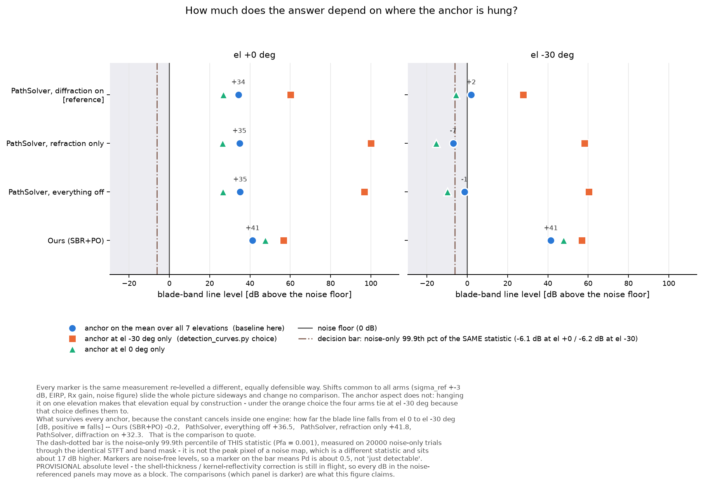
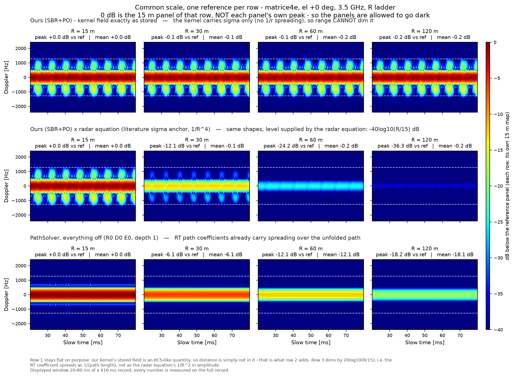
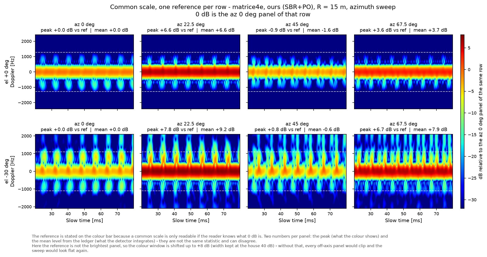
이 폴더의 index.html 에서 시작한다 —
주제 9 개 · 팔 115 개 · 칸 337 개 · 그림 258 장이 전부 걸려 있다.
위 표의 «볼 곳» 링크는 팔 하나로 바로 뛰는 자리까지 걸어 두었다.
⚠아틀라스는 원장을 읽어 그림으로 옮긴 판이라 서술은 없다. «이 그림이 왜 그렇게 생겼나» 는 여기 표의 판정 칸을 읽는다.
docs/RESUME.md맨 위 0816 절과 그 아래 0815 절이 «무엇을 끝냈고 · 무엇이 돌고 있고 · 무엇이 열려 있나» 의 정본이다. 특히 §5 «재인용 금지 · 꼬리표 강제» 표는 어떤 수를 꼬리표 없이 인용해도 되는지를 정한 자리라 인용 전에 먼저 본다.
⚠위 §4-11 에 적은 대로, 거리 관련 두 줄은 병합 전 값이라 이 색인·아틀라스의 수와 다르다.
outputs/*.json이 색인의 모든 수가 거기서 그대로 온 것이다. 이번 라운드의 중심은 여섯이다 —
frame_inventory_0816.json(재고) ·
frame_completion_0816.json(프레임 판정) ·
material_verdict_0816.json(재질) ·
noise_distance_frame.json(잡음 거리) ·
md_atlas_index.json(그림 재고) ·
scaled_maps.json(눈금 규약).
원장에는 «판정» 뿐 아니라 ⚠단서와 미착지 항목도 같이 적혀 있다 — 수만 떼어 오면 단서가 떨어진다.
reports/ 본편
⚠ 08-15 기준«왜 그런가» 를 길게 쓴 곳은 본편 11 권이다. 다만 08-15 기준이라 이 쪽에 적힌 최신 팔이 아직 안 실려 있다 — 재질 정정 · 잡음 거리 프레임 · 분석 4 종 · 프리셋 사다리 · 데이터 조사 셋은 리포트에 없다.
⇒ 그때까지 최신 판정의 정본은 이 색인과 docs/RESUME.md 다.
리포트와 이 쪽이 어긋나면 이 쪽이 최신이다.
{kind=link}
{kind=link}
{kind=link}
{kind=link}
{kind=link}
{kind=link}
{kind=link}
{kind=link}
{kind=link}
{kind=link}
{kind=link}
{kind=link}
{kind=link}
{kind=link}
{kind=link}
{kind=link}
{kind=link}
{kind=link}
{kind=link}